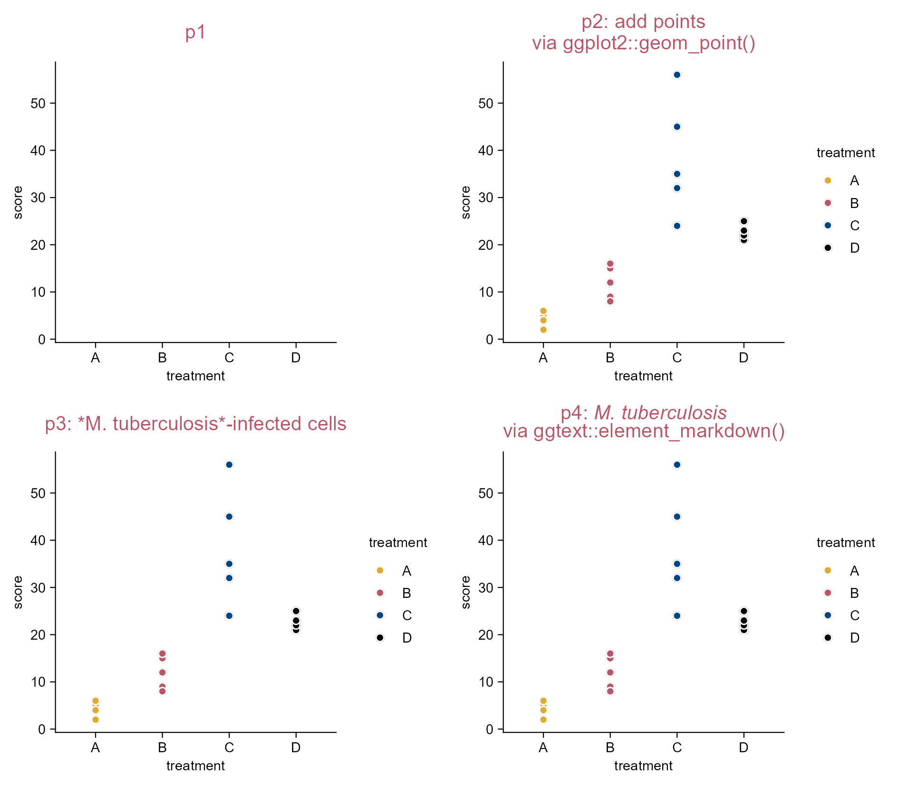
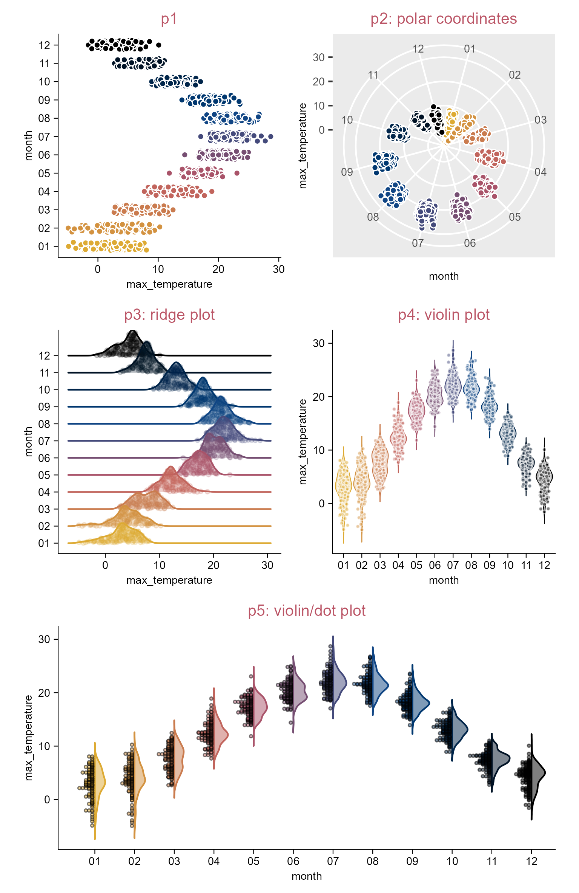
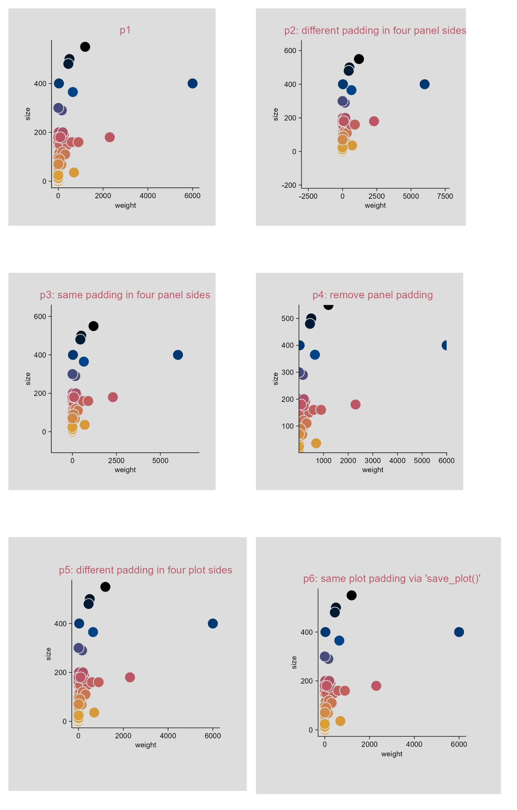

# A tibble: 3 × 6
group1 group2 p p.adj p.signif y.position
<chr> <chr> <dbl> <dbl> <chr> <dbl>
1 A B 0.005 0.01 ** 25
2 A C 0.003 0.006 ** 55
3 A D 0.0001 0.001 *** 55
add_test_pvalue_manual() and add_test_asterisks_manual() expect a discrete variable on the x-axis and a continuous variable on the y-axis. To produce horizontal plots, use flip_plot().
4.7 Compare groups (e.g. boxplot)
library(tidyplots)# View top 10 rows of the columns usedstudy |> dplyr::select(group, score, dose, treatment) |> dplyr::slice_head(n =10)
# A tibble: 10 × 4
group score dose treatment
<chr> <dbl> <chr> <chr>
1 placebo 2 high A
2 placebo 4 high A
3 placebo 5 high A
4 placebo 4 high A
5 placebo 6 high A
6 placebo 9 low B
7 placebo 8 low B
8 placebo 12 low B
9 placebo 15 low B
10 placebo 16 low B
p1 <- study |>tidyplot(x = group, y = score, color = dose) |>add_boxplot() |>add_data_points() |>add_title(title ="p1")p2 <- p1 |>adjust_title(title ="p2: test asterisks") |>add_test_asterisks()p3 <- p1 |>adjust_title(title ="p3: test p value") |>add_test_pvalue(hide_info =TRUE)p4 <- study |>tidyplot(x = treatment, y = score, color = treatment) |>add_boxplot() |>add_data_points() |>add_test_asterisks(hide_info =TRUE) |>add_title(title ="p4: test asterisks")
Because tidyplots is based on ggplot2 … thereby, tidyplots provides access to a wide range of features that are implemented within ggplot2 or ggplot2 extension packages … add() helper function.
library(tidyplots)# View top 10 rows of the columns usedstudy |> dplyr::select(treatment, score) |> dplyr::slice_head(n =10)
# A tibble: 10 × 2
treatment score
<chr> <dbl>
1 A 2
2 A 4
3 A 5
4 A 4
5 A 6
6 B 9
7 B 8
8 B 12
9 B 15
10 B 16
For the title of p4: “p4: M. tuberculosis” is followed by clicking Space bar twice and Enter button once, then followed with “via ggtext::element-markdown()”.

Add ggplot2 (extensions) code.
4.10 Add ggplot2 (extention) code (three more plots)
library(tidyplots)# View top 10 rows of the columns usedclimate |> dplyr::select(max_temperature, month) |> dplyr::slice_head(n =10)
Tidyplots is easier for many common plotting tasks.
For more complex plots, you can either augment tidyplots with custom ggplot2 code using the add() function or switch to ggplot2 for full flexibility.

Add ggplot2 (extensions) code.
4.11 Save multiple formats by piping through (e.g. dot plot)
library(tidyplots)# Viewstudy
# A tibble: 20 × 7
treatment group dose participant age sex score
<chr> <chr> <chr> <chr> <dbl> <chr> <dbl>
1 A placebo high p01 23 female 2
2 A placebo high p02 45 male 4
3 A placebo high p03 32 female 5
4 A placebo high p04 37 male 4
5 A placebo high p05 24 female 6
6 B placebo low p06 23 female 9
7 B placebo low p07 45 male 8
8 B placebo low p08 32 female 12
9 B placebo low p09 37 male 15
10 B placebo low p10 24 female 16
11 C treatment high p01 23 female 32
12 C treatment high p02 45 male 35
13 C treatment high p03 32 female 24
14 C treatment high p04 37 male 45
15 C treatment high p05 24 female 56
16 D treatment low p06 23 female 23
17 D treatment low p07 45 male 25
18 D treatment low p08 32 female 21
19 D treatment low p09 37 male 22
20 D treatment low p10 24 female 23
# Plot and savestudy |>tidyplot(x = group, y = score, color = dose) |>add_data_points_beeswarm() |>add_sem_errorbar() |>save_plot("images/multiple-formats-via-pipe.pdf", view_plot =FALSE) |>save_plot("images/multiple-formats-via-pipe.png", view_plot =FALSE) |>save_plot("images/multiple-formats-via-pipe.svg", view_plot =FALSE)
Save a plot in multiple formats by piping through.
4.12 Save multiple PDFs by piping through (e.g. violin plot)
library(tidyplots)# View top 10 rows of the columns usedgene_expression |> dplyr::select( group, expression, condition, sample_type, is_immune_gene) |> dplyr::slice_head(n =10)
# A tibble: 10 × 5
group expression condition sample_type is_immune_gene
<chr> <dbl> <chr> <chr> <chr>
1 Hin 2.20 healthy input no
2 Hin 2.20 healthy input no
3 Hin 2.66 healthy input no
4 Hin 2.65 healthy input no
5 Hin 3.44 healthy input no
6 Ein 5.03 disease input no
7 Ein 5.31 disease input no
8 Ein 5.37 disease input no
9 Ein 5.54 disease input no
10 Ein 5.65 disease input no
4.13 Save multiple PDFs at once (e.g. violin plot)
library(tidyplots)# View 10 rows of the columns usedgene_expression |> dplyr::select( group, expression, external_gene_name) |> dplyr::slice(c(1:2, 101:102, 201:202, 301:302, 401:402))
# A tibble: 10 × 3
group expression external_gene_name
<chr> <dbl> <chr>
1 Hin 2.20 Apol6
2 Hin 2.20 Apol6
3 Hin 7.39 Vgf
4 Hin 6.86 Vgf
5 Hin 8.21 Dpf2
6 Hin 8.29 Dpf2
7 Hin 5.87 Ankrd54
8 Hin 5.62 Ankrd54
9 Hin 7.84 Fam96b
10 Hin 7.52 Fam96b
# Plot and savegene_expression |>tidyplot(x = group, y = expression, color = group) |>add_violin(trim =FALSE) |>add_data_points_beeswarm(white_border =TRUE) |>adjust_size(overall_width =100) |># see the note of next pageadjust_theme_details(strip.text.x.top = ggplot2::element_text(face ="italic")) |># gene names in italicsplit_plot(by = external_gene_name, ncol =2, nrow =2) |>save_plot("images/multiple-pdf-at-once.pdf", multiple_files =TRUE, view_plot =FALSE)
The overall_width and overall_height parameters of the adjust_size() function control the overall dimensions of a multiplot layout generated with split_plot().
The function adjust_theme_details() is a wrapper around ggplot2::theme().
4.14 Save intermediate stages (e.g. bar plot)
library(tidyplots)# View top 10 rows of the columns usedstudy |> dplyr::select(treatment, score) |> dplyr::slice_head(n =10)
# A tibble: 10 × 2
treatment score
<chr> <dbl>
1 A 2
2 A 4
3 A 5
4 A 4
5 A 6
6 B 9
7 B 8
8 B 12
9 B 15
10 B 16
# Plotp1 <- animals |>tidyplot(x = weight, y = size, color = size, paper ="#dddddd") |>add_data_points(white_border =TRUE, size =3) |>add_title(title ="p1") |>remove_legend()p2 <- p1 |>adjust_title(title ="p2: different padding in four panel sides") |>adjust_padding(top =0.2, right =0.3, bottom =0.4, left =0.5)p3 <- p1 |>adjust_title(title ="p3: same padding in four panel sides") |>adjust_padding(all =0.2)p4 <- p1 |>adjust_title(title ="p4: remove panel padding") |>remove_padding()p5 <- p1 |>adjust_title(title ="p5: different padding in four plot sides") |>adjust_theme_details(plot.margin = ggplot2::margin(t =0.5, r =0.5, b =1, l =1, unit ="cm"))p6 <- p1 |>adjust_title(title ="p6: same plot padding via saving") |>save_plot("images/plot_panel_padding_p6.png", padding =0.3) # defaults to 0.1 meaning 10%

Panel and plot padding.
4.16 Use a log10 axis for data containing zero and negative values (e.g. dot plot)
library(tidyplots)set.seed(42)y <-runif(n =500, min =0, max =100)# change 30 values to zeroy[sample(NROW(y), size =30)] <-0df <- tibble::tibble(x ="test", y =c(y, y *-1))# View rows 496 - 505df |> dplyr::slice(496:505)
# A tibble: 10 × 2
x y
<chr> <dbl>
1 test 18.3
2 test 0
3 test 30.5
4 test 16.6
5 test 3.28
6 test -91.5
7 test -93.7
8 test -28.6
9 test -83.0
10 test -64.2